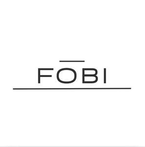

Trade Mark Journal No.2025/042 17 October 2025
UK00004274061 6 October 2025 (11,35)
Mark 1
Mark 2

- Class 11
- Candle lamps; Candle lanterns; Lamp bulbs; Lamp globes; Lamp shades; Candle lighters; Lamp mantles; Electric lamp bulbs; Sun lamps; Tail lamp bulbs; Lamp reflectors; Reflectors (Lamp -); Light bulbs for incandescent lamps; Lamp holders; Lamps; Flameless candles; Lighting lamps; Lights for incandescent lamps; Table lamp (Lampshades for -); Dashboard lamp bulbs; Glass covers being fittings for lamps for sun lamps; Infrared lamp fixtures; Night lights [other than candles]; Christmas lights [other than candles]; Incandescent lamps; Lamp glasses; Light bulbs for gas-discharge lamps; Lamp finials; Lamp chimneys; Chimneys (Lamp -); Reflector lamps; Bedside lamps; Portable hand lamps [for illumination]; Lamp fittings; Halogen lamps; Halogen light bulb; Portable lamps [for illumination]; Neon lamps for illumination; Lights for gas-discharge lamps; Lamps for festive decoration; Lamp stands; Globes for lamps; Lamps (Globes for -); Fluorescent lamp tubes; Scented electric candles; Electrical lamps for outdoor lighting; Lamp casings; Spot lamps for household illumination; Washstand lamps; Roof lights [lamps]; Infrared lamps; Lamp chimneys made of glass; Sun ray lamps; Solar lamps; Glow sticks for lighting; Oil lamps; Lanterns for lighting; Table lamps; Mercury lamps; Wall lamps; Electric incandescent lamps; Electrical lamps for indoor lighting; Germicidal lamps; Incandescent light bulbs; Burners for lamps; Lamps (Burners for -); Flameless light-emitting diode candles; Electric candles; Projector lamps; Halogen light bulbs; Spot lamps; Arc lamps [lighting fixtures]; Lamps for vehicle lighting; Lamp assemblies; Christmas tree ornaments for illumination [electric lights]; Fluorescent lamps; Battery-operated electric candles; Desk lamps; Pedestal lamps; Hanging lamps; Aquarium lamps; Electric warmers to melt scented wax tarts; Light bulbs; Fixtures for incandescent light bulbs; Vacuum lamps; Lamp bases; Floor lamps; Bulbs for lighting; Miniature light bulbs; Solar lamp units; Gas lamps; Tanning lamps; UV halogen metal vapour lamps; Electric lamps; Lamps (Electric -); Tanning apparatus [sun lamps]; Curling lamps.
- Class 35
- Advertising; business management; business administration; office functions.
Fung Cheuk Sin Angelica